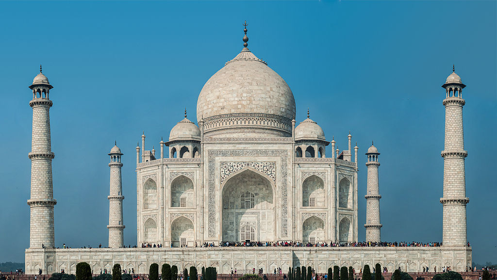

Ciudad de Agra
El Taj Mahal
El Taj Mahal es considerado el más bello ejemplo de palacio, estilo que combina elementos de las arquitecturas islámica,
5 persa,6 india e incluso turca.7 Este monumento ha logrado especial notoriedad por el carácter romántico de su inspiración.8 Aunque el mausoleo cubierto por la cúpula de mármol blanco es la parte más conocida, el Taj Mahal es un conjunto amurallado de edificios que ocupa 17 hectáreas y que también incluye una gran mezquita, una casa de invitados y jardines.
Cusco, Peru
El Machu Picchu
Machu Picchu es considerada, al mismo tiempo, una obra maestra de la arquitectura y la ingeniería.4 Sus peculiares características arquitectónicas y paisajísticas, y el velo de misterio que ha tejido a su alrededor buena parte de la literatura publicada sobre el sitio, lo han convertido en uno de los destinos turísticos más populares del planeta, así como una de las 7° maravillas del mundo.5